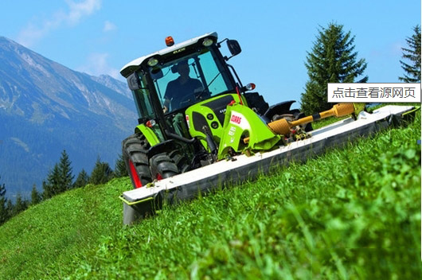
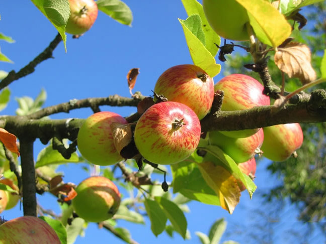

“有机肥生产原料都有哪些，哪些最好，这些一直都是有机肥前期生产厂家所关心的问题！ 下边由万丰机械的有机肥专家详解有机肥原料，具体可以分为以下几类： 1、农业废弃物：比如...

“今年复合肥行业受原材料价格上涨的影响，企业成本压力较大，亏损也时有发生，就连尿素企业也感到了销售压力，但是凡事都有它的两面性，经销商的生意还是要做的，农资市场的发...
“好处一：化肥养分含量高，肥效快，但持续时间短，养分单一。有机肥正好相反，有机肥与化肥混用可取长补短，满足作物各个生长期对养分的需要。 好处二：化肥施入土壤后，有些养...

“农民为了土地增收，种地一直大量施用化肥，造成土壤板结、肥力下降、成本增加。还有一种肥料，不仅节省买化肥的钱，而且种的庄稼也长得好，并对土壤有改良的作用，绿色无公害...
“近年来，随着我国经济的快速发展和城市居民收入的持续增长，居民对食品质量的要求也越来越高。化肥培养的农产品，不管从口味或者质量来说都比不上有机产品。因此，有机农产品...

“近几年，商品有机肥的被关注度越来越高，这是因为一方面商品有机肥的制作工艺越来越先进，肥料的功效大大提高；另一方面使用有机肥以后改善了土壤的理化状况，提高了各类养分...